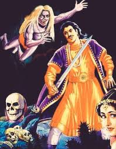

23.ચાર બ્રાહ્મણ ભાઈઓની વાર્તા |
જ્યારે રાજા વિક્રમાદિત્યએ ફરી એકવાર બેતાલને પકડ્યો ત્યારે તેણે દર વખતની જેમ નવી વાર્તા શરૂ કરી. વાર્તા સંભળાવતા બેતાલે રાજા વિક્રમાદિત્યને કહ્યું….
કુસુમપુર નામના નગરમાં એક બ્રાહ્મણ કુટુંબ રહેતું હતું. બ્રાહ્મણના પરિવારમાં ચાર પુત્રો અને તેની પત્નીનો સમાવેશ થતો હતો. બ્રાહ્મણ તેના પરિવાર સાથે સુખી જીવન જીવતો હતો. એક દિવસ બ્રાહ્મણ અચાનક બીમાર પડ્યો અને તેની હાલત દિવસેને દિવસે બગડતી ગઈ. એક દિવસ તબિયતમાં સુધારો ન થવાને કારણે બ્રાહ્મણનું મૃત્યુ થયું. બ્રાહ્મણના મૃત્યુના શોકમાં તેની પત્ની પણ સતી થઈ ગઈ.
બ્રાહ્મણ અને તેની પત્નીના મૃત્યુ પછી, તેમના સંબંધીઓએ, ચાર છોકરાઓને એકલા જોઈને, તેમના બધા પૈસા છીનવી લીધા. સંપૂર્ણપણે નિરાધાર હોવાથી, ચારેય ભાઈઓ તેમના દાદા સાથે રહેવા ગયા. થોડા દિવસ બધું બરાબર ચાલ્યું. પાછળથી, બ્રાહ્મણના ચાર પુત્રો સાથે તેમના દાદાના ઘરે પણ ખરાબ વ્યવહાર થવા લાગ્યો.
 આ સ્થિતિ જોઈને ચારેય ભાઈઓએ નક્કી કર્યું કે તેઓએ થોડું શિક્ષણ મેળવવું જોઈએ, જેથી લોકો તેમને તેમના માતા-પિતાની જેમ માન આપે. આ વિચારીને ચારેય ભાઈઓ જુદી જુદી દિશામાં આગળ વધ્યા. ચારેય ભાઈઓએ કઠોર તપસ્યા કરી અને પરિણામે તેમને વિશેષ જ્ઞાન પ્રાપ્ત થયું.
ચારેય ભાઈઓ ઘણા સમય પછી મળ્યા ત્યારે તેઓએ મેળવેલા જ્ઞાન વિશે એકબીજાને જણાવ્યું.
એકે કહ્યું- હું મૃત પ્રાણીના હાડકાં પર માંસ અર્પણ કરી શકું છું.
બીજાએ કહ્યું- હું માંસ પર ત્વચા અને વાળ બનાવી શકું છું.
ત્રીજાએ કહ્યું- હું મૃત જીવના તમામ અંગો બનાવી શકું છું.
ચોથાએ કહ્યું- હું મૃત જીવમાં જીવ આપી શકું છું.
દરેક વ્યક્તિએ મેળવેલ જ્ઞાનની પ્રશંસા કરી અને એકબીજાના જ્ઞાનની કસોટી કરવા જંગલમાં પહોંચી ગયા. તેમને જંગલમાં મૃત સિંહના હાડકાં મળ્યાં. તેણે હાડકાં ક્યા પ્રાણીના છે તે જાણ્યા વિના જ ઉપાડ્યા.
પ્રથમ વ્યક્તિએ તેના જ્ઞાનથી તે હાડકાં પર માંસ નાખ્યું. બીજાએ તેના પર ત્વચા અને વાળ બનાવ્યા. ત્રીજાએ તે જીવના તમામ ભાગો બનાવ્યા. અંતે ચોથાએ પોતાના જ્ઞાનનો ઉપયોગ કર્યો અને સિંહમાં પ્રાણ ફૂંક્યા. સિંહ જીવતો થયો કે તરત જ તેણે ચારેય ભાઈઓને મારી નાખ્યા અને ખાઈ ગયા.
એમ કહીને બેતાલે કહ્યું, "વિક્રમ કહો, મને કહો કે આ ચાર ભણેલા મૂર્ખમાં સૌથી મોટો મૂર્ખ કોણ હતો."
વિક્રમે જવાબ આપ્યો, “આ ચાર મૂર્ખમાં સૌથી મોટો મૂર્ખ ચોથો ભાઈ હતો, જેણે સિંહમાં જીવનો શ્વાસ લીધો હતો. કારણ એ છે કે અન્ય લોકોએ જાણ્યા વગર સિંહનું શરીર બનાવ્યું હતું. તેને ખ્યાલ નહોતો કે તે કયું પ્રાણી બનાવી રહ્યો છે. તે જ સમયે, ચોથો વ્યક્તિ સારી રીતે જાણતો હતો કે તે સિંહનું શરીર હતું. આમ છતાં તેણે સિંહના શરીરને જીવનદાન આપ્યું. આ તેની સૌથી મોટી મૂર્ખતાનો પુરાવો છે.”
વિક્રમનો જવાબ સાંભળીને બેતાલે કહ્યું, “વિક્રમ, તેં સાચો જવાબ આપ્યો, પણ તેં મારી શરત તોડી. મેં કહ્યું હતું કે તમે બીજું કહો તો હું ઝાડ પાસે જઈશ. તો તમે બોલ્યા અને હું ગયો. આટલું કહીને બેતાલ ફરી એક વાર એ જ ઝાડ પર જાય છે અને લટકી જાય છે. આ સાથે ચાર મૂર્ખ વિક્રમ બેતાલની વાર્તા સમાપ્ત થાય છે.